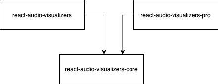
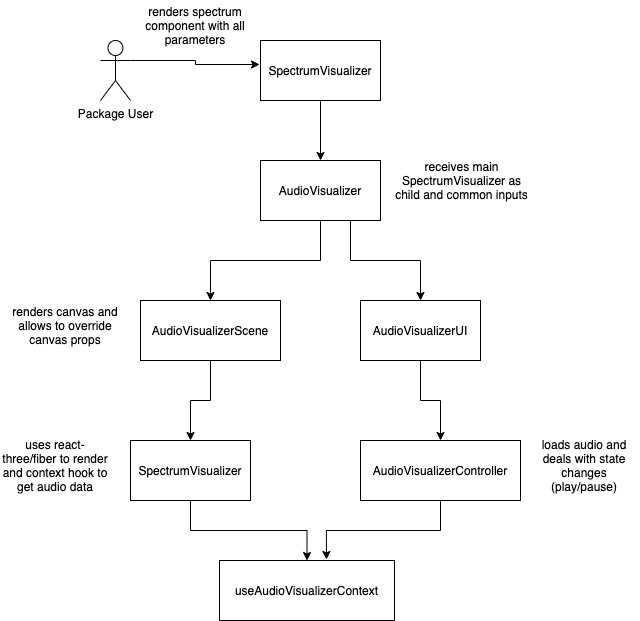

Architecture
Architecture describes how the library is structured, the decisions that led to that structure, a typical flow of interaction between components, and how visualizer components are implemented inside react-audio-visualizers.
Packages
React-audio-visualizers is divided in three main architecture level packages that are all available through npm.

- react-audio-visualizers-core: core funcionality to deal with audio (e.g. load, play, pause, …) and UI for the main play/pause action. Here you can find the core
<AudioVisualizer>component, as well as helpful types, hooks and utilities to deal with audio. - react-audio-visualizers: all standard and free visualizers are here. This is the main package of the library and the only one that is required to import to use visualizers. Only contains logic to render/draw visualizers and uses functionality from the core package.
- react-audio-visualizers-pro: paid package that contains extra visualizers. Like the main package it only contains render logic and uses the core package for the rest.
There were three main reasons that led to this structure.
The first reason is to facilitate users to use the library. It is only required to import one package, react-audio-visualizers, import the visualizer component from there and use it. Every visualizer component, like <SpectrumVisualizer>, uses the core <AudioVisualizer> component under the hood to deal with audio logic, so it has to accept all the common props that <AudioVisualizer> requires. The benefit here is that users don’t have to import this component themselves, making the library easy to use as this is done “automatically” by the visualizer component. The downside is that every visualizer has to duplicate a call to <AudioVisualizer>, but weighing the prons and cons it is worth it.
The second reason is to facilitate developers to contribute to the library. To create new visualizers developers can either contribute to react-audio-visualizers or create their own project and use only react-audio-visualizers-core to get all audio features and maintain the same interface, thus is only required to implement the rendering for the visualizers.
The third and last reason is to separate between free and paid content. As react-audio-visualizers is open source it is not possible to keep there paid visualizers, otherwise it would make little to no sense to pay for it’s content. While react-audio-visualizers-pro is not open source, so paying users can be sure of the exclusivity of it’s visualizers.
Flow
The flow of interaction between components of the library is shown in the image below.

- The user of react-audio-visualizers package imports any visualizer, such as
<SpectrumVisualizer>, and adds it to the project. - The visualizer renders
<AudioVisualizer>from the core passing common props as well as the rendering logic of the visualizer as children. <AudioVisualizer>then renders<AudioVisualizerScene>to render the HTML canvas, and<AudioVisualizerUI>to render UI for interacting with the audio.<AudioVisualizerScene>renders the rendering logic of<SpectrumVisualizer>that got passed as children, leveraging ThreeJS through react-three-fiber, and uses<useAudioVisualizerContext>hook to get audio data to animate the visualizer.<AudioVisualizerController>deals with loading the audio and changing it’s state, updating the context accordingly.
Visualizer Component
The following snippet shows an example of an audio visualizer from react-audio-visualizers, in this case <LineSpectrumVisualizer>.
import { useEffect, useMemo, useRef } from 'react';
import { BufferGeometry, Vector2 } from 'three';
import { useFrame, useThree } from '@react-three/fiber';
import {
AudioVisualizer,
AudioVisualizerCommonProps,
AudioVisualizerUtils,
Color,
useAudioVisualizerContext,
} from 'react-audio-visualizers-core';
// constants hidden to save space
export interface LineSpectrumVisualizerProps extends AudioVisualizerCommonProps {
colors?: Color[];
lowFrequency?: number;
highFrequency?: number;
numBars?: number
}
export const LineSpectrumVisualizer = (props: LineSpectrumVisualizerProps) => {
const {
lowFrequency,
highFrequency,
numBars,
colors = [DEFAULT_COLOR],
...audioVisualizerCommonProps
} = props;
const canvasProps = { orthographic: true };
return (
<AudioVisualizer canvasProps={canvasProps} {...audioVisualizerCommonProps}>
<LineSpectrumVisualizerRender
numBars={numBars}
lowFrequency={lowFrequency}
highFrequency={highFrequency}
color={colors[0]}
/>
</AudioVisualizer>
);
};
interface LineSpectrumVisualizerRenderProps extends Pick<
LineSpectrumVisualizerProps, 'lowFrequency' | 'highFrequency' | 'numBars'
> {
color?: Color;
}
const LineSpectrumVisualizerRender = ({
numBars,
color,
lowFrequency,
highFrequency,
}: LineSpectrumVisualizerRenderProps) => {
const { audioContext, analyser } = useAudioVisualizerContext();
const { viewport: { width: viewportWidth, height: viewportHeight } } = useThree();
const spectrumWidth = viewportWidth - DEFAULT_MARGIN_WIDTH;
const halfSpectrumWidth = spectrumWidth / 2;
const halfSpectrumHeight = viewportHeight / 2;
const nPoints = numBars || Math.round(viewportWidth * DEFAULT_NUM_BARS / REFERENCE_SPECTRUM_WIDTH);
const spacing = spectrumWidth / nPoints;
const dataArray = new Uint8Array(analyser ? analyser.frequencyBinCount : 0);
const interval = AudioVisualizerUtils.getFrequencyInterval(lowFrequency, highFrequency, nPoints, dataArray, audioContext?.sampleRate);
const ref = useRef<BufferGeometry>();
const line = useMemo(() => (
<line>
<bufferGeometry ref={ref} />
<lineBasicMaterial color={color} />
</line>
), [ref, color]);
useEffect(() => {
ref.current?.setFromPoints(Array.from(Array(nPoints), (_, i) => {
const x = spacing * i - halfSpectrumWidth;
const y = -halfSpectrumHeight + DEFAULT_MARGIN_HEIGHT_BOTTOM;
return new Vector2(x, y);
}));
}, [nPoints, spacing, halfSpectrumWidth, halfSpectrumHeight]);
useFrame(() => {
if (analyser && audioContext && ref.current) {
analyser.getByteFrequencyData(dataArray);
const filteredData = AudioVisualizerUtils.filterFrequencies(lowFrequency, highFrequency, dataArray, audioContext.sampleRate);
for (let i = 0; i < nPoints; i++) {
const height = AudioVisualizerUtils.map(filteredData[i * interval], MIN_DECIBEL, MAX_DECIBEL, MIN_BAR_HEIGHT, viewportHeight - DEFAULT_MARGIN_HEIGHT_TOP) || MIN_BAR_HEIGHT;
ref.current.attributes.position.setY(i, height - halfSpectrumHeight);
ref.current.attributes.position.needsUpdate = true;
}
}
});
return line;
};
<LineSpectrumVisualizer> uses <AudioVisualizer> from the core and passes as children the component that will actually render the visualizer.
Notice how <LineSpectrumVisualizerRender> is using useFrame from react-three-fiber to animate the visualizer each frame, by using the data that comes from getByteFrequencyData from Web Audio API. The analyser is an instance of AnalyserNode that is stored inside <AudioVisualizer> context and is obtained through the useAudioVisualizerContext hook.
The rest is mainly leveraging ThreeJS through react-three-fiber to handle the drawing.